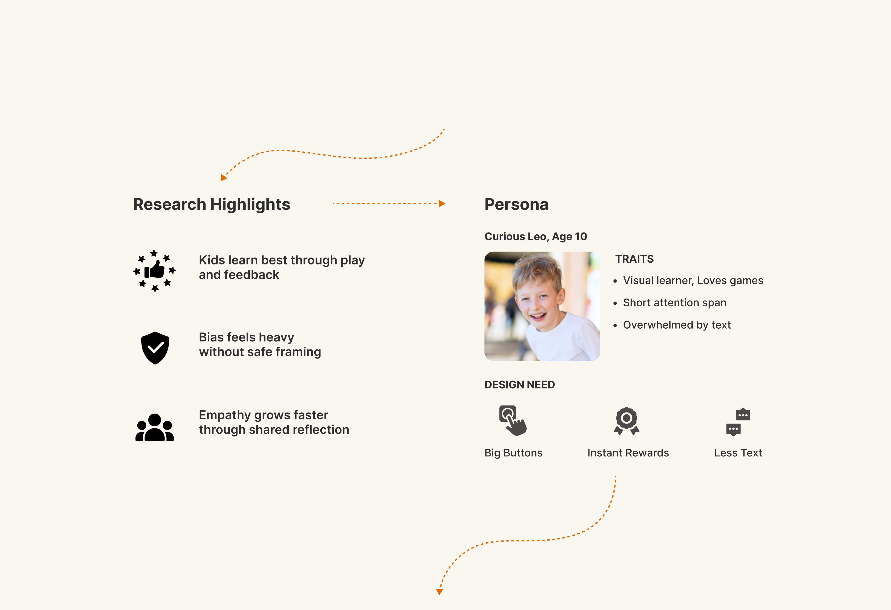
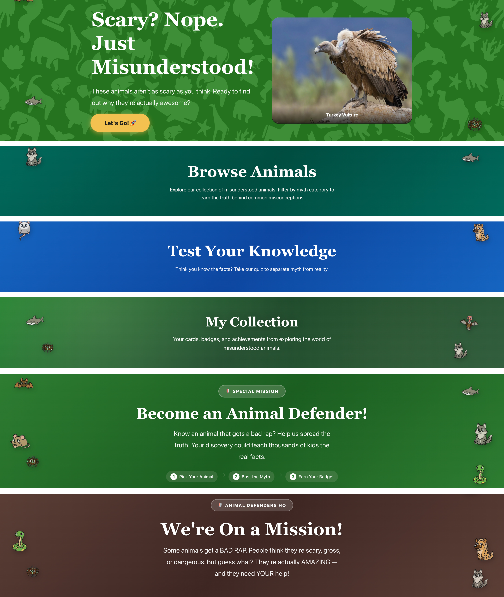

Scenario Stories
Interactive story cards that surface everyday moments of bias.
 Go to website
Go to website
How might we help kids recognize bias early and practice empathy in a safe, engaging way?

A simple loop designed to keep kids curious, engaged, and rewarded.

Hook · Home
Interactive hero, world map
→ Spark curiosity
Learn · Browse / Detail
Explore animals, bust common myths
→ Learn by discovering
Test · Quiz
Swipe myth vs fact, instant feedback
→ Learning feels like a game
Reward · Collection
Unlock cards & badges, track progress
→ Curiosity earns rewards
Contribute · Submit
Add new animals, become an Animal Defender
→ Help the library grow
Interactive story cards that surface everyday moments of bias.
Short exercises that guide reflection and self-regulation.
Safe space for kids to share insights and encouragement.